Live · in use by Kritilabs employees
Kriti Attendance
Making daily attendance clearer, from registration to check-out.
A mobile app redesign focused on helping employees register, understand their attendance status, review location accuracy, and access recent attendance records.
Project overview
Kriti Attendance is an employee-facing attendance application for Kritilabs. The redesign brings registration, attendance actions, GPS feedback, and daily records into a more structured experience.
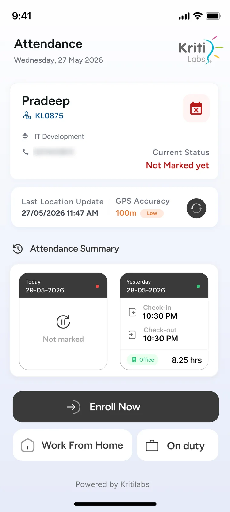
The challenge
Attendance is a repeated daily task. Employees need to understand whether they have marked attendance, what action comes next, and whether their location information is ready.
The earlier interface displayed employee details, location timestamps, GPS accuracy, and attendance actions in a largely form-based layout. Technical labels such as "Fix Time" and "Accuracy" required interpretation, while the main screen gave limited visibility into attendance progress and recent records.
The design challenge was to make the process easier to understand, including situations where registration, location access, or connectivity interrupts the task.
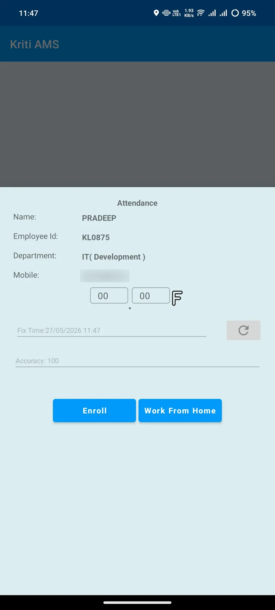
The design goal
Create an attendance experience that answers three questions clearly:
1What is my attendance status?
2What should I do next?
3If something goes wrong, how can I continue?
Users and scope
The users are Kritilabs employees, for whom attendance is a repeated daily task. The app is employee-facing (B2E), so each screen has to make status and next steps clear without training.
- Registration
- Attendance states
- Location feedback
- Attendance summary
- Error recovery
The core journey
Core journey
- Enter employee details
- Review and verify
- Complete registration
- Review attendance and location status
- Mark attendance
- Check out
- Review the daily record
Recovery states
- Location access disabled
- Internet unavailable
- Registration message not delivered
Location and connectivity recovery states support this journey when the normal flow is interrupted.
Design decisions
Drag across the panel to compare the earlier screen with the redesign.
1. A guided registration experience
I divided registration into focused stages: entering employee information, reviewing the matched details, processing registration, and confirming completion.
The verification screen lets employees review their name, employee ID, department, and registered mobile number before proceeding. A "Not your details? Go back" option provides a clear way to correct a mismatch.
Processing and success screens explain what is happening during setup. The design also includes a verification-code flow and a message-delivery failure state with guidance to retry or contact HR/admin support.
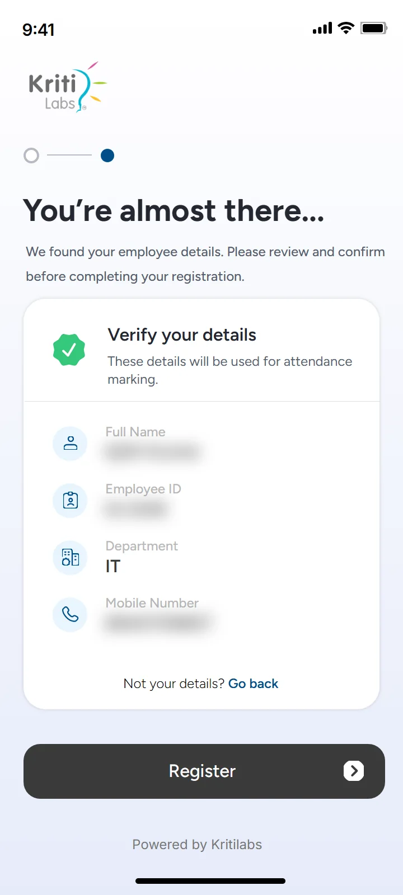

2. Attendance status at the centre of the experience
I designed separate screens for Not Marked, Checked In, and Checked Out.
Making these states explicit gives employees a clearer indication of where they are in the daily attendance process. The primary action changes with the state, including a check-out action after check-in.
Employee information, current status, location details, and the attendance summary are grouped into distinct sections so each serves a clear purpose.
3. More understandable location feedback
Location information is part of the attendance decision, so the redesign makes it easier to interpret.
The interface pairs GPS accuracy values with descriptive feedback such as "Good" or "Low" and uses "Last location update" to explain the timestamp. A refresh interaction includes a visible "Refreshing…" state.
This approach is intended to help employees distinguish between their attendance status and the readiness of their location information.
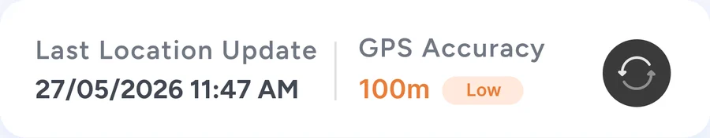
4. Recent attendance in context
The attendance summary brings recent records into the main experience. Entries show check-in and check-out times, recorded hours, and office or work-from-home labels.
Additional states cover unmarked attendance, incomplete entries, and weekly off days. These variations help represent the different situations employees may encounter when reviewing their records.

5. Recovery when the task is interrupted
I included recovery screens for disabled location access, unavailable internet connectivity, and unsuccessful registration-message delivery.
The messages describe the issue and suggest a next step, for example enabling location access or turning on Wi-Fi or mobile data. This gives employees practical guidance at the point where they need it.
Design outcome
The redesign establishes a more explicit attendance journey through guided registration, visible attendance states, understandable location feedback, and accessible recent records.
These are design outcomes. Improvements in completion time, attendance errors, or support requests would need to be measured through usability testing and production use.
The next validation step would be to test whether employees can identify their current status, complete registration, and recover from location or connectivity issues without assistance.
"This project reinforced the importance of designing beyond the main action."
An attendance experience also needs to explain waiting, confirmation, missing information, and failure.
Design decisions
Four decisions shaped the redesign. Each story follows the same structure: the situation before, the alternatives on the table, the reasoning and trade-off, what I designed, and what can honestly be said about the result.
1Attendance status over attendance actions
The screen answers "Have I marked today?" before showing any button.
Strategic · Read story
2Explaining GPS instead of hiding it
"Accuracy: 100" became "100m · Low", with refresh one tap away.
Strategic · Read story
3Staged employee verification
Identify, confirm, verify, done, with a way back and an SMS-failure path.
Tactical · Read story
4One experience for office and remote work
One screen for every mode; the chosen mode stays visible as a tag.
Strategic · Read story
- Original appEarlier Kriti AMS screens
- ExplorationEarlier frames from my Figma file
- ConceptualAn option described for comparison, not a design I made
- Final designThe redesigned screens
Decision 01 · Strategic
Why I prioritised attendance status over attendance actions
The first question an employee has when opening an attendance app is whether today's attendance is already marked.
Before the decision
The original app was action-first. Enroll and Work From Home were the only interactive elements on the screen, and there was no status line. To know whether they'd already marked attendance, employees had to remember their last interaction with the app.
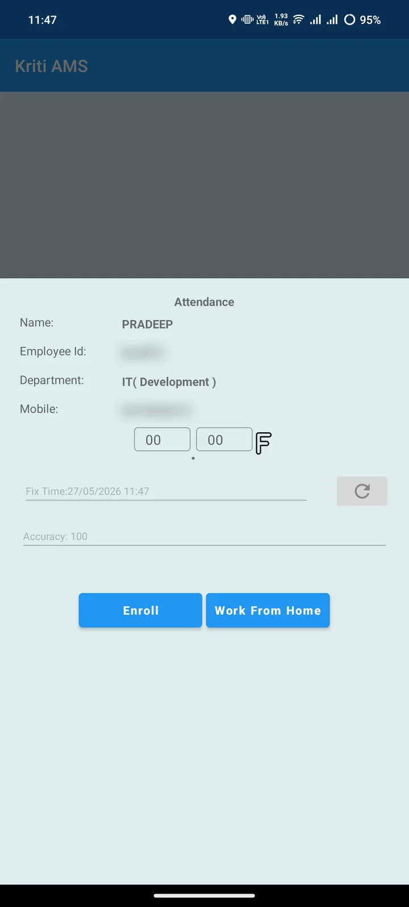
The turning point
Reasoning
A task repeated every working day shouldn't depend on employees remembering what they did last. Leading with status replaces recall with recognition.
Trade-off
Three explicit states mean three versions of the screen to design, build and keep in sync with the backend, compared with one static layout.
What I designed
The status, the badge colour, the primary button and today's summary card all change together, so every part of the screen says the same thing.
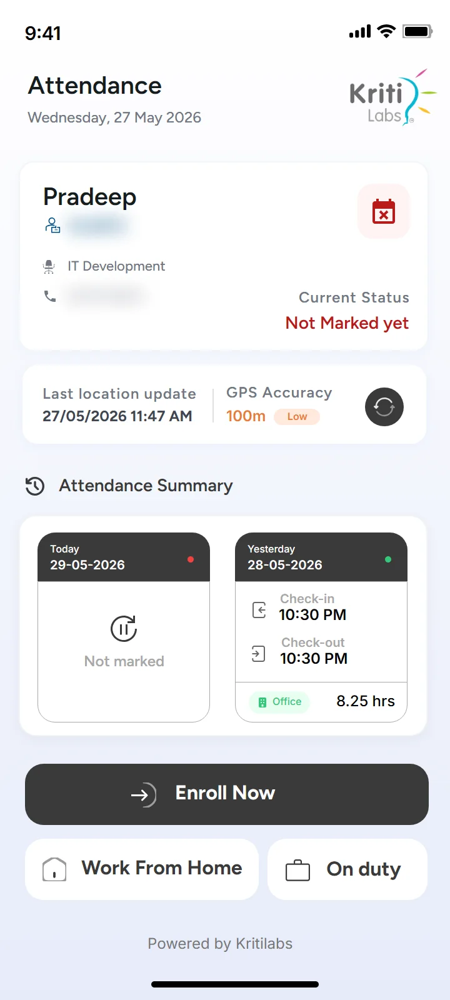
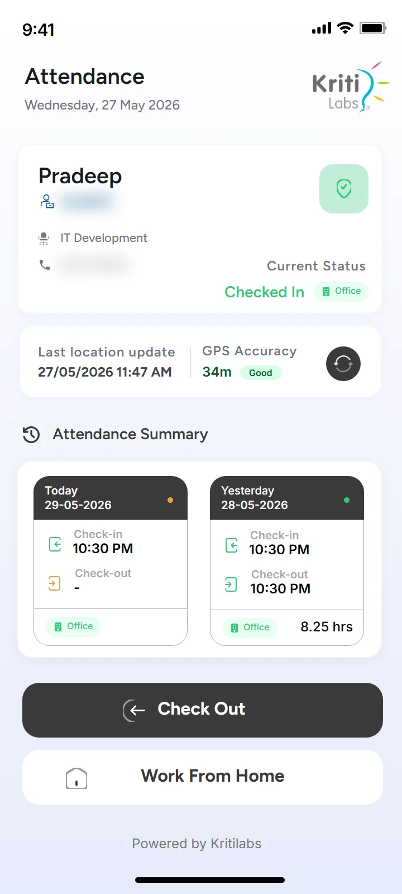
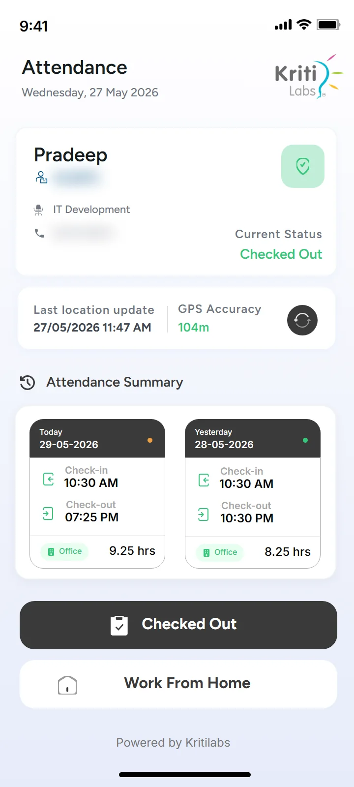
- Not MarkedRed status · Enroll Now
- Checked InGreen shield, Office tag · Check Out
- Checked OutCompleted day card
Drag across the panel to compare the original screen with the redesign.
Result
The redesign makes each attendance state explicit and gives every state one clear next action. Whether this reduces uncertainty would need to be confirmed in testing.
- Visibility of system status
- Recognition rather than recall
- Hick's law
- Information hierarchy
Decision 02 · Strategic
Why I made GPS verification understandable instead of hiding it in the background
When attendance depends on location, employees need to know whether the app has captured a reliable location.
Before the decision
The original app already showed location data, but only as raw values: "Fix Time" and "Accuracy: 100" in small grey text. When something went wrong, employees couldn't tell whether the problem was their location, the timing or the app.
The turning point
Reasoning
More information is worth showing when it helps people understand the system and recover from problems. "100m · Low" tells an employee what to do; "Accuracy: 100" doesn't.
Trade-off
Location details make the screen denser. They're grouped in one compact card under the status, so they don't compete with the primary action.
What I designed
Accuracy is paired with a rating (Low, Good), the timestamp is labelled "Last location update", and the refresh control sits in the same card.
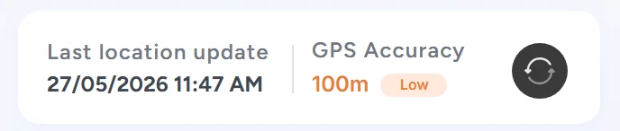
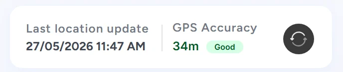
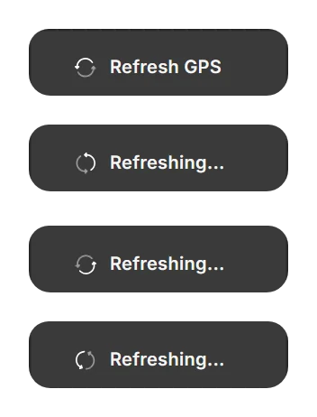
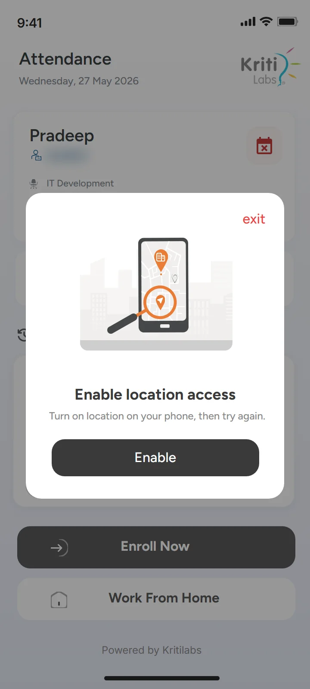
- RefreshA visible "Refreshing…" state
- Location offThe dialog names the fix and offers it
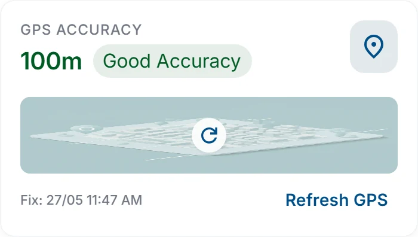
An earlier frame in my file explored a larger GPS card with a map thumbnail. The final design keeps its ideas (a rating, the update time and refresh) in a card about a third of the height, without the map.
Result
Location readiness, its timestamp and the recovery control are visible next to the attendance action. Better employee confidence is the intended benefit, still to be validated.
- Visibility of system status
- User control and freedom
- Progressive disclosure
- Error recovery
Decision 03 · Tactical
Why I designed staged employee verification instead of a single registration form
Employees need confidence that their attendance account is connected to the right employee record.
Before the decision
The original app did split registration in two: a form, then a "Validation successful" review. But the review was a block of label–value rows, the wait showed a plain "Loading… Seconds remaining: 17" box, and there was no sign of where you were in the process.
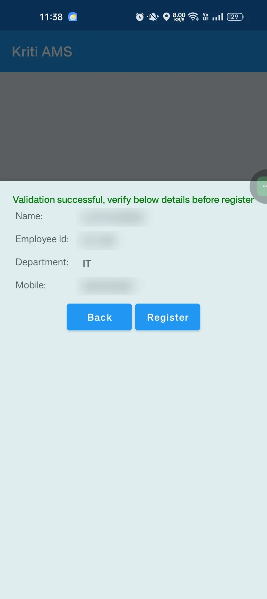
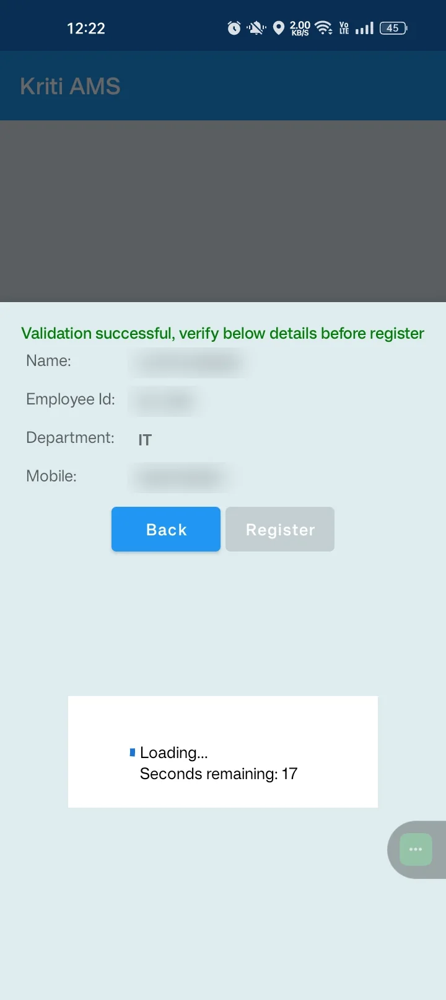
The turning point
Reasoning
Registration happens once; attendance happens every day on top of it. A few extra seconds confirming identity at setup protects every record that follows.
Trade-off
Every added stage is onboarding friction and implementation work: a processing timer, an SMS code and a delivery-failure path.
What I designed
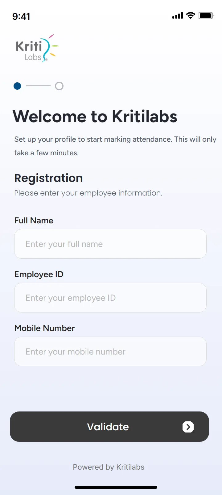
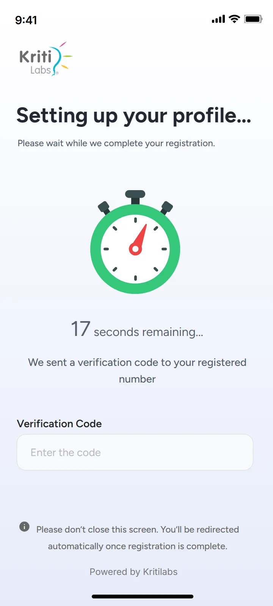
- 1 · IdentifyName, employee ID, mobile
- 2 · ConfirmMatched record, with a way back
- 3 · VerifyCountdown and SMS code
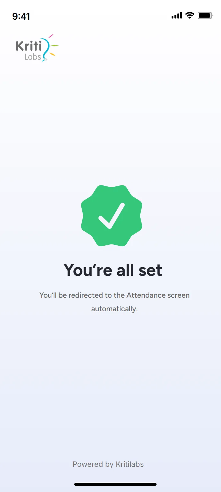
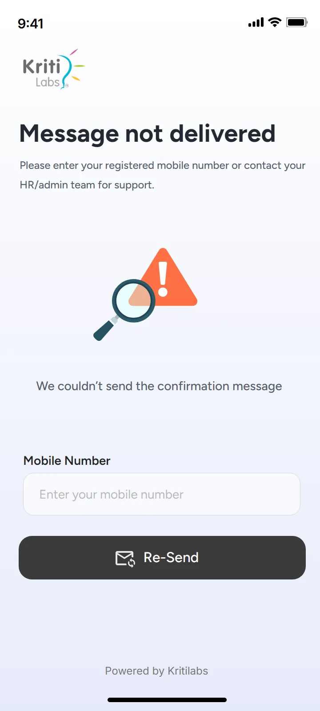
- 4 · DoneAutomatic redirect to attendance
- If the SMS failsRe-send, or contact HR/admin
Result
Registration now shows progress, lets employees confirm the matched record before committing, explains the wait and covers SMS delivery failure. Completion rates haven't been measured.
- Progressive disclosure
- Error prevention
- Visibility of system status
- Identity confirmation
Decision 04 · Strategic
Why I designed one attendance experience for office and remote employees
An employee's working environment may change. Their attendance goal stays the same.
Before the decision
The original app put Enroll and Work From Home side by side as equal buttons, and nothing on the screen showed which mode had been used afterwards.
The turning point
Reasoning
Keeping one familiar interaction across work modes means nothing to relearn when someone works from home. Making the mode visible afterwards prevents silent mistakes.
Trade-off
A shared screen can hide real differences. Office and remote attendance may follow different verification rules, which the interface has to communicate rather than assume.
What I designed
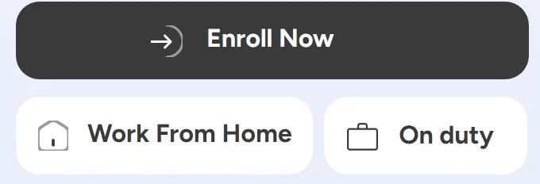
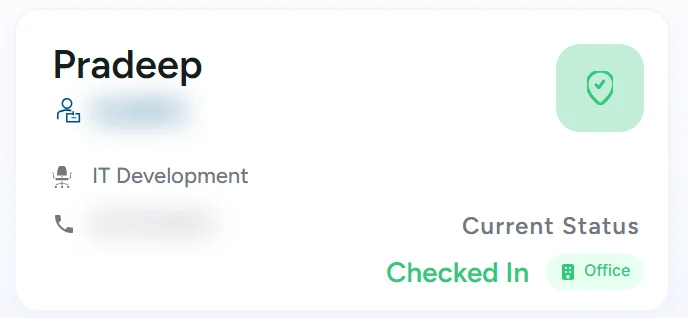
The everyday action is primary; Work From Home and On duty are deliberate, secondary choices. After check-in, the status carries the work mode as a tag, and the summary cards record each day as Office or WFH.
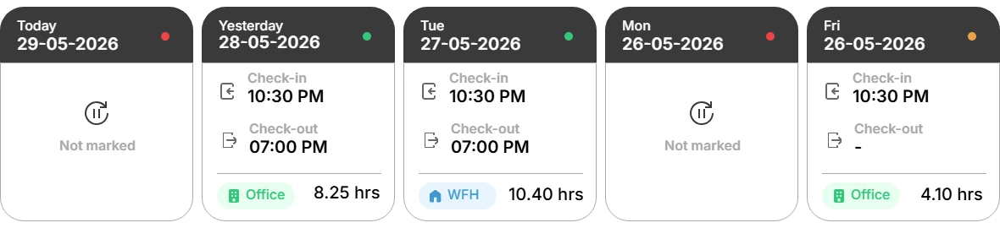
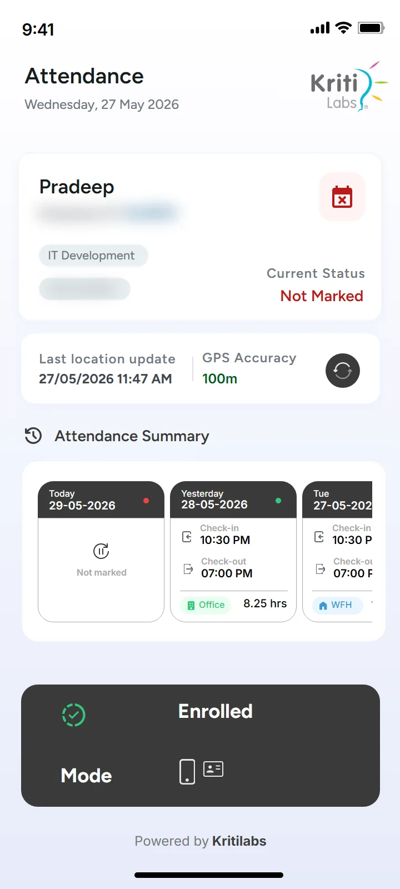
A v4 frame explored showing the mode inside an expanded "Enrolled · Mode" panel. The final design moved the mode into a small tag on the status, which keeps the action area the same in every state.
Result
Office, remote and on-duty attendance share one familiar screen, and the chosen mode stays visible in the status and the records. Fewer wrong-mode entries is the intended benefit, still to be validated.
- Consistency and standards
- Error prevention
- Flexibility and efficiency of use
The explorations that shaped the final experience
My Figma file keeps four numbered versions of the attendance screen. Read in order, they show the layout settling from stacked cards into the final status-led structure.
- Original
Kriti AMSA form-like layout with no status and raw GPS values.
- v1
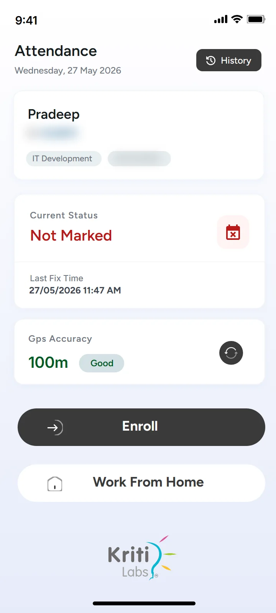
Status gets its own cardThree stacked cards push the actions down; history sits behind a header button.
- v2
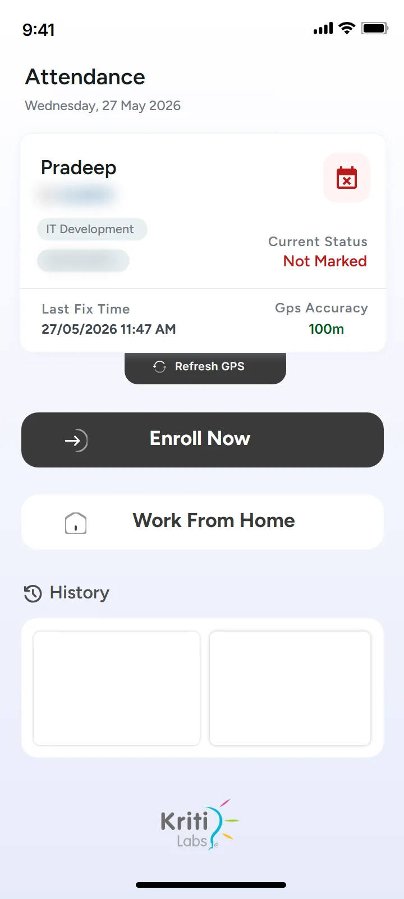
Merged and condensedStatus joins the employee card and history moves onto the screen.
- v3
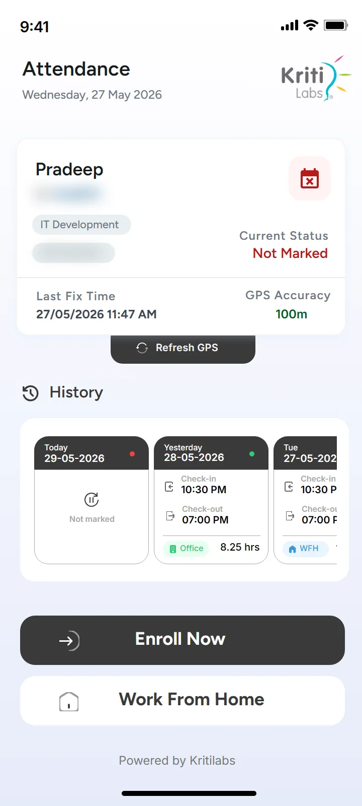
Records become cardsDay cards with times, hours and Office/WFH tags.
- v4
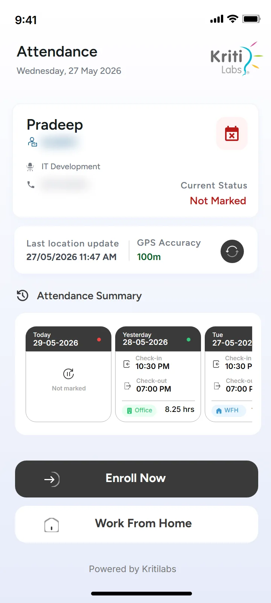
Plain language"Last Fix Time" becomes "Last location update"; History becomes "Attendance Summary".
- Final
Status, ratedStatus badges, Low/Good ratings, an On duty action and a two-day summary.
App icon explorations
Alongside the screens, I explored icon directions: lettermarks, calendar-and-tick metaphors, a clipboard illustration and layered ID cards using the Kritilabs colours.
Designing consistency across everyday interactions
These values come from the final frames in the Figma file. There's no separate published library; this is the system the screens actually use.
Typography
- Setting up your profile…Figtree Bold 28/36 · screen titles
- Not Marked yetFigtree SemiBold 20/28 · names and key values
- Work From HomeFigtree Medium–Bold 16 · buttons and labels
- 10:30 PM · 8.25 hrsInter Semi Bold 10–12 · record data
Colour and meaning
- #3A3A3APrimary action
- #004F89Brand blue
- #242731Primary text
- #717782Secondary text
- #BA1A1ANot marked
- #34C77BChecked in · good
- #EA7C37Low accuracy
- #FFF → #E6EBF9Screen background
Contrast check
I checked the status colours against WCAG 2.2 text contrast. Three pairs fall short and are on the refinement list.
| Pair | Ratio | AA text |
|---|---|---|
| Primary text #242731 on white | 14.9:1 | Pass |
| White on primary action #3A3A3A | 11.4:1 | Pass |
| Not marked #BA1A1A on white | 6.5:1 | Pass |
| Secondary text #717782 on white | 4.5:1 | Pass |
| Low accuracy #EA7C37 on white | 2.8:1 | Fail |
| Field labels #A8A8A8 on white | 2.4:1 | Fail |
| Checked in #34C77B on white | 2.2:1 | Fail |